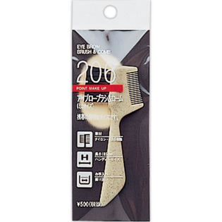

返回列表
产品名称：資生堂 アイブローブラシ＆コーム（ミニサイズ）

資生堂 資生堂 アイブローブラシ＆コーム（ミニサイズ） ２０６
メーカー 資生堂
JANコード 4901872636976
商品の特徴
眉を整えるに便利なブラシ＆コームです。携帯に便利なサイズです。
成分・分量
-
用法及び用量
【使用方法】・眉墨をぼかすときは、眉の毛流れにそってブラシを動かします。 ・眉をカットする場合は、眉の毛流れにそってブラシを動かした後、コームでとかしながらはみ出した眉毛をカットしていきます。 ・ブラシが汚れたときは、ぬるま湯に中性洗剤をうすく溶かしたなかで、軽く振り洗いをします。十分すすいで水気をきり、日かげでよく乾かしてご使用ください。